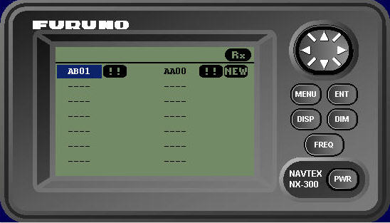

Receptor Navtex
Dependiendo de la configuración elegida del simulador cada puesto va equipado con un receptor Navtex Furuno NX-500 real o bien con un equipo mimético simulado por software con la misma apariencia y funcionalidad del receptor Navtex Furuno NX-300.
La integración del receptor se realiza de manera que conserven todas las funcionalidades exigidas a este tipo de receptores, como son presentación de mensajes, selección de estación emisora y tipo de mensaje a recibir, alarma audible y visual para mensajes urgentes o almacenamiento de mensajes.


Los mensajes Navtex son generados desde el puesto de instructor de acuerdo con el formato especificado por la reglamentación aplicable. El instructor seleccionará la prioridad del mensaje y programará su transmisión inmediata o periódica desde cualquiera de las estaciones emisoras Navtex incluidas en el ejercicio.